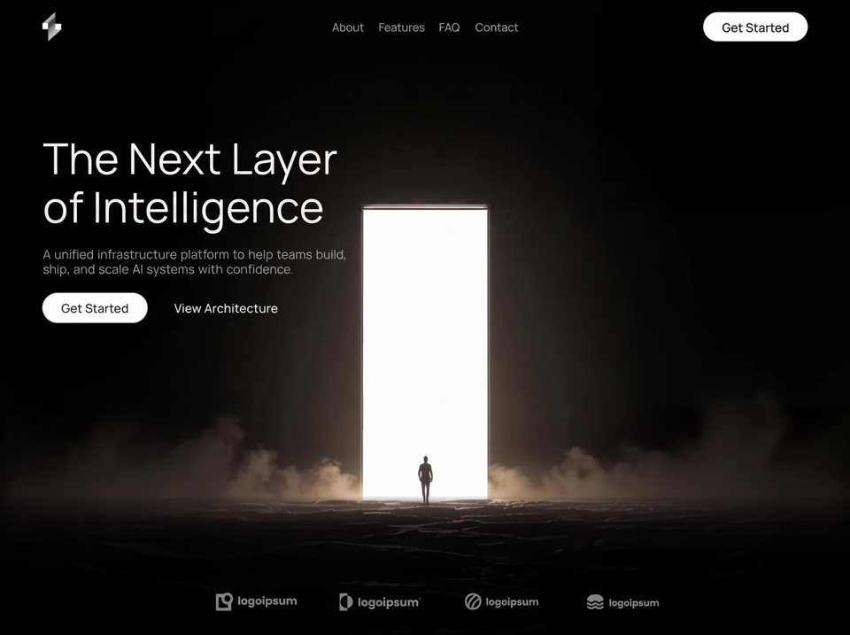

Intelligence Layer
Technologytechnologyyilai-ai 公开页面
收录时间：2026-08-14正文：12,082 字符

本地预览图 · jpeg
完整提示词
Recreate a single-file dark cinematic AI-infrastructure landing page EXACTLY as specified. Deliver one self-contained index.html (inline CSS + JS, no build step). Pixel-faithful to a measured Figma-style comp. No cards, no purple, no glow orbs, no decorative abstract gradients as the main visual — the hero visual is a full-bleed looping video.
════════════════════════════════════════
PAGE META / IDENTITY
════════════════════════════════════════
- Document title: "The Next Layer of Intelligence"
- Brand: abstract geometric S-like mark (lightning/bolt geometry), NOT a wordmark in the header.
- Product vibe: premium AI infrastructure / “next layer of intelligence”; black void stage; restrained silver/white type; white pill CTAs.
- Viewport: fixed full-screen stage; html/body height 100%; overflow hidden; background #050505.
- Antialiased Manrope UI; text-rendering: geometricPrecision.
════════════════════════════════════════
FONTS (REQUIRED)
════════════════════════════════════════
1) Primary UI type: Manrope (variable / range font-weight 200–800), normal style.
- Load via @font-face woff2 OR Google Fonts equivalent:
https://fonts.google.com/specimen/Manrope
weights covering 400, 500, 700 (variable 200–800 preferred).
- body font-family: 'Manrope', system-ui, -apple-system, 'Segoe UI', sans-serif
2) Partner logo wordmark type: custom display face named "IpsumMark", weight 700.
- Used ONLY on the four bottom “logoipsum” wordmarks.
- If IpsumMark binary is unavailable, approximate with a bold geometric sans close to logoipsum marks (still set font-family stack: 'IpsumMark','Manrope',sans-serif) — do NOT use Inter/Roboto/Arial as primary.
════════════════════════════════════════
COLOR TOKENS (CSS VARIABLES)
════════════════════════════════════════
--ink: #fafafa /* headline / primary text */
--muted: #a7a6a6 /* subcopy */
--nav: #b6b5b5 /* header links */
--strip: #8b8a8a /* partner logos */
--pill: #ffffff /* CTA fill */
--pill-ink: #050505 /* CTA text */
Stage / page black: #050505
════════════════════════════════════════
RESPONSIVE UNIT SYSTEM (CRITICAL — MATCH EXACTLY)
════════════════════════════════════════
Reference canvas: 1487 × 1058.
:root {
--u: calc(100vh / 1058); /* 1 design px locked to HEIGHT */
--uw: calc(100vw / 1487);
--h: clamp(var(--u), calc(var(--u) * .65 + var(--uw) * .35), calc(var(--u) * 1.16));
}
@supports (height: 100dvh) { :root { --u: calc(100dvh / 1058); } }
Meaning:
- Vertical rhythm always fills the screen (nav ~27u, headline top ~230.5u, logos ~995u, baseline 1058u).
- Left column anchored ~75u from left; header CTA ~75–76u from right; nav + logo strip centered.
- --h grows type slightly on ultra-wide (max +16%), never shrinks below height-locked --u.
Portrait / narrow (max-aspect-ratio: 11/10):
- Switch to flow layout (flex column), unit --m: min(100vw/430, 1.34px); --u: var(--m)
- Tablet band (≥600px AND max-aspect-ratio 11/10):
--m: min(100vw/860, 100vh/760, 1.25px)
════════════════════════════════════════
BACKGROUND — CLOUDFRONT VIDEO (MANDATORY URL)
════════════════════════════════════════
Exact video URL (must use this, not a substitute):
https://d8j0ntlcm91z4.cloudfront.net/user_38xzZboKViGWJOttwIXH07lWA1P/hf_20260808_112712_da9d53df-6d27-4b12-bdf6-aa9dc2622bdf.mp4
Markup inside absolute .plate covering the stage:
<video class="plate-video" autoplay muted loop playsinline preload="auto" aria-hidden="true">
<source src="[URL ABOVE]" type="video/mp4">
</video>
Desktop video geometry (match photo-plate sizing):
- position absolute
- left: 50%; top: calc(1 * var(--u))
- width: calc(1492 * var(--u)); height: calc(1054 * var(--u))
- transform: translateX(calc(-50% - calc(0.5 * var(--u))))
- object-fit: cover; pointer-events: none
Portrait: inset 0; full width/height; transform none; object-fit cover; object-position 43% center
Tablet portrait: object-position 44% center
Video subject (for art direction fidelity): dark cinematic scene — silhouetted figure walking toward a tall glowing white vertical portal/door of light on misty ground, smoke/fog at base, pure black surroundings. Loop seamlessly.
FADE OVERLAYS on .plate::after (keep BOTH gradients):
Desktop:
1) Bottom fade:
linear-gradient(to bottom,
rgba(5,5,5,0) 78.8%, rgba(5,5,5,.23) 79.6%, rgba(5,5,5,.45) 81.4%,
rgba(5,5,5,.75) 83.3%, rgba(5,5,5,.84) 85.2%, rgba(5,5,5,.888) 88%,
rgba(5,5,5,.905) 91%, rgba(5,5,5,.96) 95%, #050505 100%)
2) Side letterbox:
linear-gradient(to right,
#050505 calc(50% - 746u),
transparent calc(50% - 676u),
transparent calc(50% + 676u),
#050505 calc(50% + 746u))
where u = var(--u)
Portrait overlays (replace desktop):
- to-right: rgba(5,5,5,.86)→.66@42%→.20@78%→.10@100%
- to-bottom: .72@0%→.34@24%→.34@56%→.80@82%→.97@94%→#050505
Tablet portrait slightly lighter side/top values (.84/.60/.16/.06 and .66/.28/.30/.78/.96).
════════════════════════════════════════
STRUCTURE (DOM ORDER)
════════════════════════════════════════
.stage
.plate > video.plate-video
header.topbar
a.brand (aria-label Home) > brand SVG
nav.links (aria-label Primary): About | Features | FAQ | Contact
a.pill.pill-nav > span “Get Started”
button.burger#burger (two <i> bars) — portrait only visually
nav.menu#menu (mobile overlay)
.menu-inner
p.menu-eyebrow “Menu”
ul.menu-list: About, Features, FAQ, Contact
.menu-foot: pill “Get Started” + ghost “View Architecture”
main.hero
h1.headline: <span>The Next Layer</span> <span>of Intelligence</span>
p.sub: <span>A unified infrastructure platform to help teams build,</span>
<span>ship, and scale AI systems with confidence.</span>
.actions
a.pill.pill-cta > span “Get Started”
a.ghost “View Architecture”
.logos
.lg.lg1 … .lg.lg4 (icon SVG + word “logoipsum”; lg2 has a tiny raised dot after the word)
════════════════════════════════════════
DESKTOP ABSOLUTE LAYOUT (in --u / --h units)
════════════════════════════════════════
Brand mark:
- left 75u, top 27u, size 31.5u × 48.5u
Nav links (.links):
- left 50%, top 51u, transform translate(-50%, -50%)
- font 19.0u / weight 400 / color --nav
- gaps between links ≈ 24.5u, 23.5u (3rd), 26.0u (4th)
- items: About, Features, FAQ, Contact — plain text links, no underlines
Header pill (.pill-nav):
- right 75.4u, top 27u, 175u × 49u
- white pill, radius 999px, text #050505, font 20.6u weight 500
- inner span translateY(1u) for optical centering
- label: “Get Started”
Headline (.headline):
- left 75.5u, top 230.5u
- font-size 71.6h, line-height 80.5h, weight 400, letter-spacing 0.3h
- color --ink; white-space nowrap; each span display:block (two lines):
Line1: “The Next Layer”
Line2: “of Intelligence”
Subcopy (.sub):
- left 75.5u
- top: 230.5u + 189.0h
- font 20.7h / lh 23.5h / weight 400 / word-spacing 1.8h / color --muted
- two nowrap lines as spans:
“A unified infrastructure platform to help teams build,”
“ship, and scale AI systems with confidence.”
Primary CTA (.pill-cta):
- left 74.9u
- top: 230.5u + 264.5h
- size 175.6h × 50h, font 20.6h
- label “Get Started”
Ghost link (.ghost):
- left: 74.9u + 220.6h
- top: 230.5u + 279.5h
- font 20.6h weight 500 letter-spacing 0.12h color #fff
- label “View Architecture” (no underline)
Partner strip (.logos):
- width 741u, left 50%, transform translateX(-50% + 20u)
- color --strip (#8b8a8a)
- Four marks, absolute positions:
lg1: left -0.5u, top 994.7u; mark 30.5×31u; word left 37u top ~5.6u size 18.1u “logoipsum”
lg2: left 206.5u, top 995.7u; mark 24.5×30u; word left 31u top ~7.3u size 18.5u “logoipsum” + .dot (inline 0.09em circle, vertical-align 0.62em, margin-left 0.06em)
lg3: left 416.5u, top 996.7u; mark 28.5×28u; word left 35u top ~7.3u size 16.15u “logoipsum”
lg4: left 620.5u, top 998.7u; mark 28.5×25.5u; word left 37u top ~8.3u size 15.3u “logoipsum”
- Wordmarks use font-family IpsumMark, weight 700
════════════════════════════════════════
BRAND SVG (exact geometry)
════════════════════════════════════════
viewBox="0 0 31.5 48.5"
- LinearGradient id bg1 from (8,0)→(34.1,28.9) stops:
0 #9e9e9e, .28 #a6a6a6, .34 #a3a3a3, .40 #3a3a3a, .55 #414141,
.60 #7a7a7a, .68 #8e8e8e, .80 #a9a9a9, .95 #c4c4c4, 1 #cccccc
- Path: M21.5 0 L21.5 19.5 L31.5 19.5 L31.5 29 L10 48.5 L10 28.5 L0.5 28.5 L0.5 18.5 Z fill url(#bg1)
- Rect 0.5,18.5 9×10 fill #fdfdfd
- Rect 22,19.5 9.5×9.5 fill #fdfdfd
Shape reads as a stylized angular “S” / bolt with two bright rectangular notches.
════════════════════════════════════════
PARTNER ICON SVGs (currentColor = --strip)
════════════════════════════════════════
1) viewBox 0 0 30 31 — square frame with circular bite (mask circle at 19.5,10.5 r5.1) + circle path
2) viewBox 0 0 25 30 — vertical bar + circle yin-yang mask split (classic logoipsum dual form)
3) viewBox 0 0 28 28 — circle stroke r12.35 sw 3.1 + two curved stroke paths (swirls)
4) viewBox 0 0 28 25.5 — filled wavy “mound” path + two stroked wave lines beneath (sw ~3.05)
(Use the exact path data from the source page if available; otherwise match these logoipsum silhouettes precisely.)
════════════════════════════════════════
ANIMATIONS (prefers-reduced-motion: no-preference ONLY)
════════════════════════════════════════
Easing: cubic-bezier(.22, 1, .36, 1)
@keyframes rise:
from { opacity:0; transform: translateY(14u) }
@keyframes riseNav: (for centered nav — preserve translate(-50%,-50%) end state)
from { opacity:0; transform: translate(-50% + 0u, -50% + 14u) }
to { opacity:1; transform: translate(-50% + 0u, -50%) }
@keyframes fade:
from { opacity:0 }
Stagger on load:
- .brand, .links, .pill-nav → rise / riseNav, 0.8s, both
- .headline → rise 0.9s, delay 0.06s
- .sub → rise 0.9s, delay 0.14s
- .pill-cta, .ghost → rise 0.9s, delay 0.22s
- .lg → fade 1.1s, delay 0.34s, ease
Reduced motion: collapse menu/burger transitions to ~0.001s; skip entrance animations.
════════════════════════════════════════
PORTRAIT / MOBILE BEHAVIOR
════════════════════════════════════════
- Hide .links and .pill-nav; show frosted-glass pill burger (rgba white .06 / border .14, backdrop blur).
- Burger bars morph to X when .stage.is-open (rotate ±45deg with translateY ±4.3m).
- Overlay .menu: full-screen dark gradient blur, opacity/visibility transition 0.42s.
- Staggered menu reveal (eyebrow, each li, foot) opacity+translateY with delays .06/.10/.16/.22/.28/.34s.
- Menu links large (~31m, min 25px) with small chevron ::after.
- Headline wraps inline on phone; returns to two-line spans on tablet band.
- Logos: 2×2 grid on phone; single row of 4 on tablet ≥600px.
- Safe-area padding on stage.
════════════════════════════════════════
JS (minimal)
════════════════════════════════════════
Toggle .is-open on .stage via burger click; sync aria-expanded / aria-hidden / aria-label.
Close on Escape, on menu link click, and when resized to landscape aspect > 1.1.
════════════════════════════════════════
COMPOSITION RULES (DO NOT VIOLATE)
════════════════════════════════════════
- First viewport = ONE composition: brand mark + nav + one headline + one sub + CTA pair + full-bleed video + bottom partner strip. No stats, cards, badge chips, or secondary marketing blocks.
- Brand mark is a hero-level left signal, not tiny nav decoration only.
- Video is edge-to-edge background plane (not inset card/media).
- No overlays/stickers on the video except the measured edge/bottom fades.
- White fully-rounded pills for primary CTAs only; ghost text for secondary.
- Single HTML file; works desktop + mobile.
Build it so a 1487×1058 desktop screenshot matches this layout to the pixel, with the CloudFront MP4 looping behind the left typography column and the four gray logoipsum marks sitting in the bottom fade.
```
---把上面的提示词完整复制到支持长文本的 AI 工具中，再按需要替换品牌名、配色与文案。提示词描述的是整页结构与动效节奏，生成后建议在真实浏览器里检查首屏加载和移动端表现。
来源与版权
该条目来自公开提示词页面，原始出处信息未随页面提供。
提示词文本与预览素材的版权归原作者或原平台所有，本站仅作索引与归档。若你是权利人并希望移除本条内容，请通过联系方式告知。